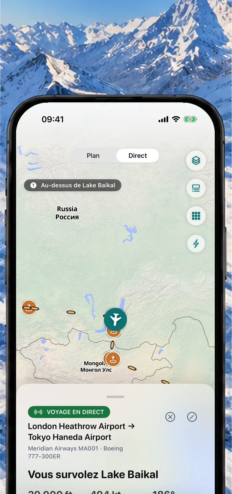
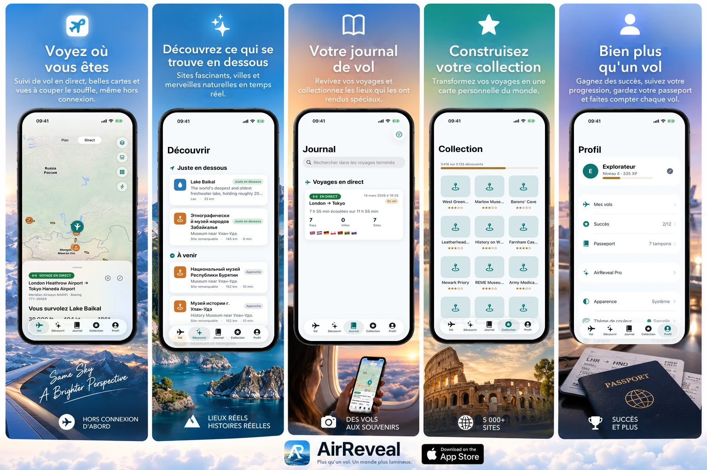
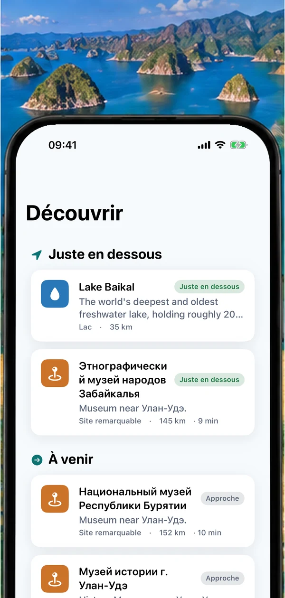
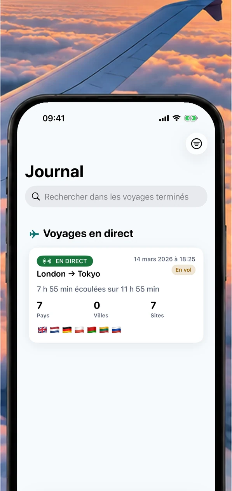
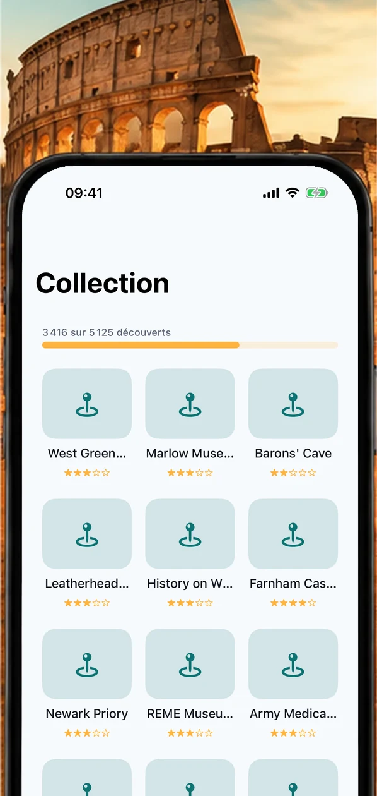
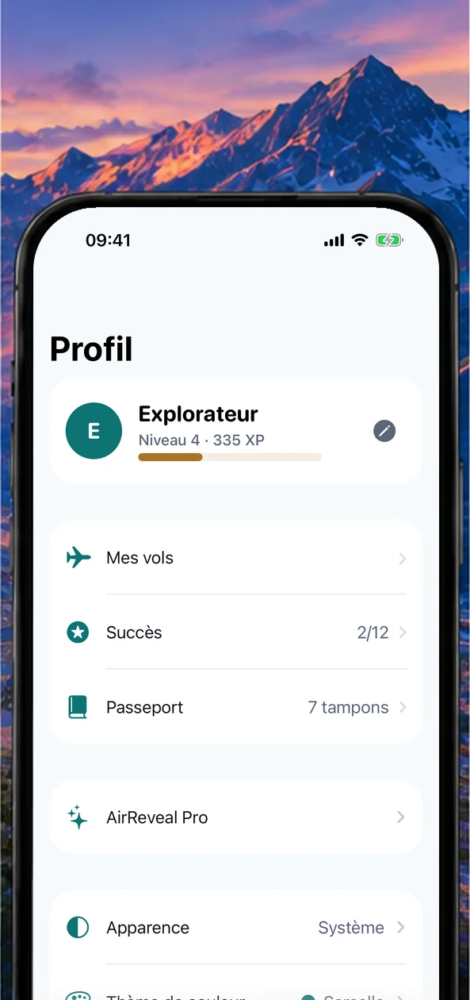
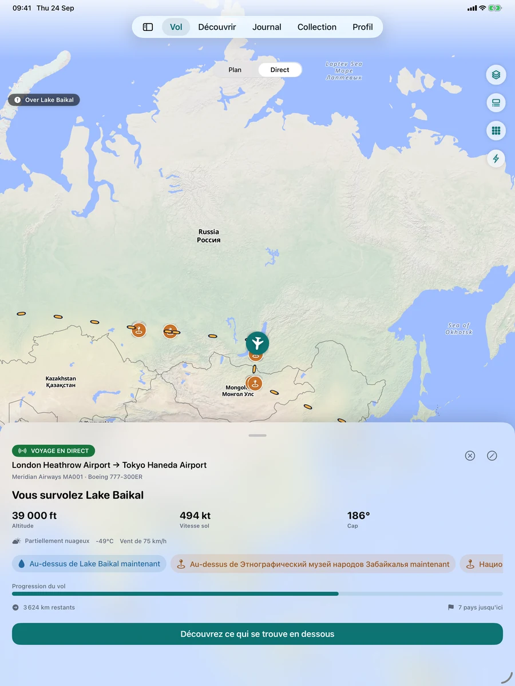
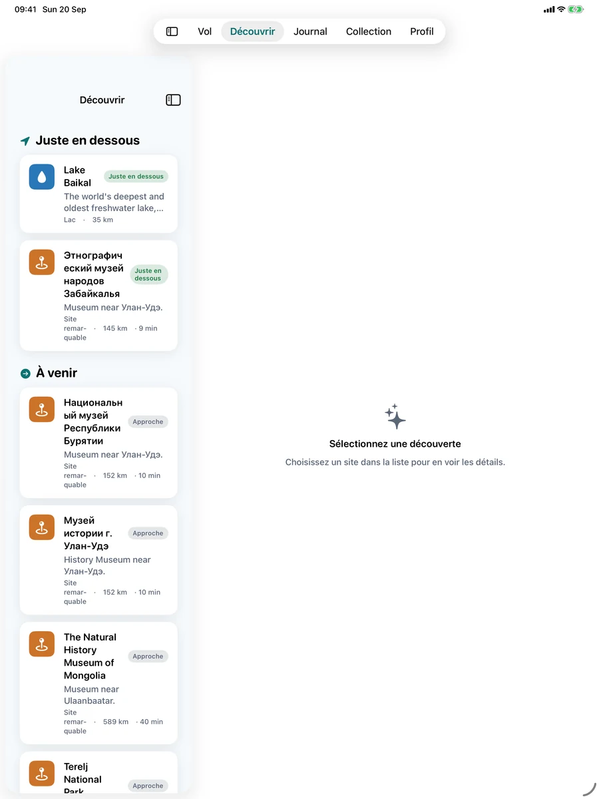
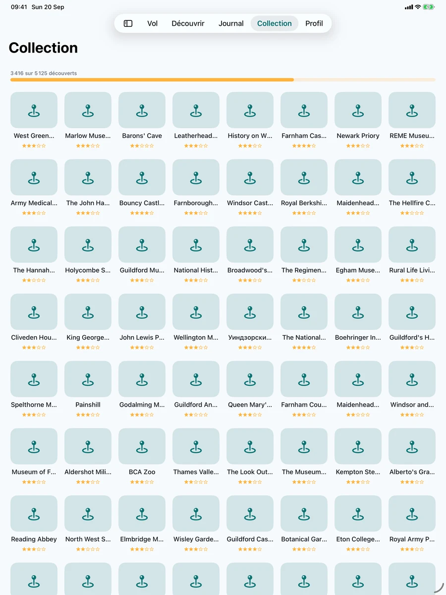

Voyez où vous êtes
Suivi de vol en direct, belles cartes et vues à couper le souffle, même hors connexion.

Voyez ce que vous survolez, repérez les sites remarquables sous votre avion, gardez le souvenir de chaque voyage dans votre journal de vol et composez une collection personnelle du monde, pensée pour les moments où vous êtes vraiment en l'air.

AirReveal réunit le contexte du vol, la découverte géographique, le journal et la collection dans une expérience sereine pensée pour le voyage.
Suivi de vol en direct, belles cartes et vues à couper le souffle, même hors connexion.

Sites fascinants, villes et merveilles naturelles en temps réel.

Revivez vos voyages et collectionnez les lieux qui les ont rendus spéciaux.

Transformez vos voyages en une carte personnelle du monde.

Gagnez des succès, suivez votre progression, gardez votre passeport et faites compter chaque vol.

Une expérience adaptative pensée autour de l'appareil que vous avez en main, d'un coup d'œil rapide sur iPhone à une grande carte de vol sur iPad.



Chaque siège hublot pose la même question. AirReveal y répond : votre position en direct sur la carte, les sites, villes et merveilles naturelles sous et devant votre avion, et ce qui arrive ensuite.
De vrais sites le long de votre itinéraire, nommés au moment où vous les survolez, grâce au GPS de votre appareil.
Sachez si un site, ou le soleil de l'heure dorée, est à gauche ou à droite pour choisir le bon hublot.
Une carte de vol hors connexion qui n'a besoin que du GPS. Téléchargez le contenu de votre vol avant le départ et c'est prêt.
Enregistrez chaque vol, collectionnez les lieux vus et tamponnez votre passeport des pays.
Ouvrez AirReveal : l'app utilise le GPS de votre appareil pour vous placer sur la carte et nommer les sites, villes, côtes et merveilles naturelles sous et devant votre avion, en temps réel.
Oui. Le suivi en direct utilise le GPS de votre appareil, qui n'a besoin ni du Wi-Fi de bord ni d'un signal mobile. Téléchargez le contenu hors connexion d'un vol avant le départ pour avoir cartes et sites prêts pour le voyage.
AirReveal vous indique si un site, ou le soleil à l'heure dorée, est à gauche ou à droite de votre appareil, pour que vous sachiez par quel hublot regarder.
Non. AirReveal est un compagnon personnel pour le voyage lui-même. Ce n'est pas un service officiel de statut de vol, de contrôle aérien ou de sécurité aérienne : renseignez-vous auprès de votre compagnie et de l'aéroport pour les portes, retards et consignes de l'équipage.
Oui. Enregistrez chaque vol dans votre journal, collectionnez les sites découverts, tamponnez votre passeport des pays et suivez votre progression grâce aux succès.
Vous pouvez planifier et prévisualiser des vols et suivre votre premier vol en direct gratuitement. AirReveal Pro débloque le suivi GPS en direct continu et toute l'expérience en vol.
Planifiez et prévisualisez des vols et explorez l'expérience avant le décollage.
Débloquez le suivi GPS en direct continu et toute l'expérience en vol.
Les prix s'affichent dans votre devise sur l'App Store.
AirReveal arrive bientôt sur l'App Store pour iPhone et iPad.